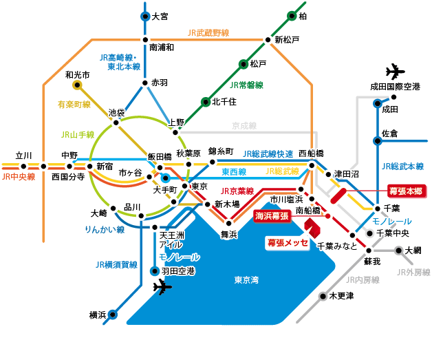

会場
幕張メッセ（千葉市美浜区）
http://www.m-messe.co.jp/
電車でのアクセス

| JR京葉線 | 「海浜幕張」駅から徒歩5分 （東京駅から29分、蘇我駅から12分） |
|---|---|
| JR総武線 | 「幕張本郷」駅から ・「QVCマリンフィールド」行きまたは、「医療センター」行き（日・祝運休）バスで17分、【タウンセンター】下車で徒歩3分。 ・「幕張メッセ中央」行きバスで17分、【幕張メッセ中央】下車 |
車でのアクセス
・東関東自動車道：湾岸習志野I.C.または湾岸千葉I.C.から約5分
・京葉道路：幕張I.C.から約5分
※幕張メッセ駐車場：5500台収容（普通車1,000円/日）
※駐車場に関する詳細は http://www.m-messe.co.jp/access/access_car.html をご覧ください。
※会場へのアクセスについての詳細は、 http://www.m-messe.co.jp/access/index.html をご覧ください。
東京ゲームショウ オフィシャル宿泊ツアー
一般公開日である2011年9月17日（土）、18日（日）の2日間を、前日都内に宿泊し、翌日、「東京ゲームショウ」に来場できる宿泊ツアーを販売します。オフィシャルツアー専用入場口からの優先入場券付きなので、一般の列に並ばずに入場できるのが魅力。イベント前日の宿泊費とツアー専用入場口からの入場券がセットになっているお得なツアーです。是非検討してみてください!
申し込む